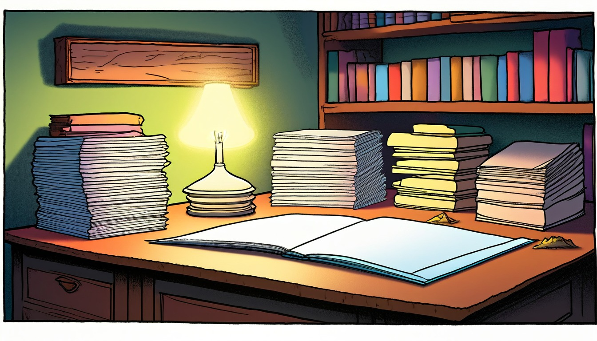

Sixteen paper pocket cards help writers summarize a story start, main action, important change, ending result, keeper detail, summary sentence, and library pocket label.
Audience: Families, homeschool groups, tutors, and adult-led writing tables for writers ages 7-11.
Format: 16 printable library pocket story summary cards plus adult guide tools, summary routines, take-home summary slips, and optional adult prompts
Family-safe printable writing pages for adult-led, offline summary practice.
$97
Included
16 printable library pocket summary cards
Adult setup guide
Fictional summary safety notes
Story start prompts
Main action prompts
Important change prompts
Ending result prompts
Keeper detail prompts
Six adult-led summary routines
Ten take-home summary slips
Printable PDF and ZIP artifact
Adult guide
Summary coaching
Library Pocket Story Summary Adult Guide: ____.
Set out one story summary card, seven blank slips, a pencil, and a paper pocket before the session begins: ____.
Name the paper-only path: story start, main action, important change, ending result, keeper detail, summary sentence, and library pocket label: ____.
Choose one fictional story world from the pack and keep all names, places, and actions invented: ____.
Place one blank slip under each summary heading so the writer can see the full order before writing: ____.
Keep the finished slips tucked in the paper pocket for adult-led reuse: ____.
Facilitation notes
Use short spoken choices when a writer gets stuck: start place, action, change, result, detail, sentence, label: ____.
Accept dictated words, copied adult wording, or independent writing as long as the summary stays fictional: ____.
Keep the summary sentence to one clear line that names the story start, main action, important change, and ending result: ____.
Use the keeper detail only if it helps the summary stay specific without adding identifying facts: ____.
Close by rereading the slips in order and checking that the library pocket label matches the summary sentence: ____.
Safety notes
Use pretend names, broad made-up places, and invented actions instead of identifying facts: ____.
Keep the activity away from outside audiences, correction marks, or comparison between writers: ____.
Keep the pocket metaphor separate from outside title pages, creator names, or service forms: ____.
Keep every prompt about a pretend story with invented details only: ____.
Skip any prompt that starts to feel like identifying-fact collection and return to invented story facts: ____.
Use one story summary card at a time. Keep every summary line broad, invented, paper-only, and guided by an adult.
World menu
Sixteen summary card worlds
Pick a world image, then name the story start, main action, important change, ending result, keeper detail, summary sentence, and library pocket label.
Ages 6-8
Moon Muffin Market
Ages 10-11
Pencil Dragon Academy
Ages 7-8
Teacup Town Weather Window
Ages 7-8
Mitten Market Lost Ticket
Ages 7-9
Rain Boot Route Rangers
Ages 8-10
Greenhouse Gear Garden
Ages 8-10
Moss Message Observatory
Ages 8-10
Rain Gauge Railway
Ages 8-10
Compost Clock Workshop
Ages 8-10
Seed Library Map Room
Ages 8-10
Solar Oven Picnic Station
Ages 8-10
Tidepool Timekeepers Lab
Ages 10-11
Almost Invention Workshop

Ages 10-11
Appendix Archive Lab
Ages 10-11
Clue Label Tower Museum
Ages 10-11
Index Card Theater Club
Summary routines
Choose the story summary routine
Use before a first summary card so the adult and writer can see the seven paper parts: ____.
Pocket Order Setup: ____.
The adult lays out blank slips labeled story start, main action, important change, ending result, keeper detail, summary sentence, and library pocket label: ____.
The writer points to the story start slip and says where the fictional story begins: ____.
The adult points across the row and names each next part in order: ____.
The writer tucks the empty slips halfway into the paper pocket until each one is ready: ____.
Use when the summary needs a clear opening and one action that moves the story: ____.
Story Start To Main Action: ____.
The adult asks for one invented story start with a broad pretend place and a made-up character role: ____.
The writer writes the story start on the first slip: ____.
The adult asks what the character does next that matters most: ____.
The writer writes the main action on the second slip and places it after the story start: ____.
Use when the middle of the summary feels like a list instead of a change: ____.
Important Change Check: ____.
The adult rereads the story start and main action in a calm voice: ____.
The writer names what becomes different because of the main action: ____.
The adult helps trim the answer to one important change: ____.
The writer writes the important change and slides it behind the main action slip: ____.
Use when the summary needs a result that connects back to the earlier slips: ____.
Ending Result Match: ____.
The adult asks what happens after the important change in the fictional story: ____.
The writer chooses one ending result that answers the main action: ____.
The adult checks that the ending result does not add a new unrelated problem: ____.
The writer writes the ending result and places it after the important change: ____.
Use when the summary sentence needs one vivid but small detail: ____.
Keeper Detail Sort: ____.
The adult spreads the story start, main action, important change, and ending result slips: ____.
The writer chooses one keeper detail that helps the summary stay clear: ____.
The adult asks whether the keeper detail supports the summary sentence: ____.
The writer writes the keeper detail on its slip and keeps it beside the sentence blank: ____.
Use at the end of a paper session to close the summary neatly: ____.
Summary Sentence And Pocket Label: ____.
The adult reads the four main slips in order without adding extra facts: ____.
The writer writes one summary sentence using the story start, main action, important change, and ending result: ____.
The adult asks for a short library pocket label that names the summary focus: ____.
The writer writes the library pocket label and tucks all slips into the paper pocket: ____.
Take-home summary slips
Try one summary later
Take-home summary slip
Story Start Slip
The fictional story start is ____________________.
Ask for one invented starting place or situation, then stop.
Take-home summary slip
Main Action Slip
The main action that moves the story is ____________________.
Help choose one action, not every event.
Take-home summary slip
Important Change Slip
The important change after the main action is ____________________.
Look for what becomes different in the fictional story.
Take-home summary slip
Ending Result Slip
The ending result is ____________________.
Keep the result connected to the earlier action.
Take-home summary slip
Keeper Detail Slip
The keeper detail that helps the summary is ____________________.
Choose one useful detail and leave the rest out.
Take-home summary slip
Summary Sentence Slip
My summary sentence is: ____________________.
Use one clear sentence from the finished slips.
Take-home summary slip
Library Pocket Label Slip
The library pocket label for this summary is ____________________.
Make the label short and fictional.
Take-home summary slip
Order Check Slip
My slips are in this order: story start, main action, important change, ending result, keeper detail, summary sentence, library pocket label: ____________________.
Use this as a quiet reread pass.
Take-home summary slip
Shorten The Summary Slip
One extra detail I can leave out is ____________________.
Frame this as paper sorting, not judging.
Take-home summary slip
Pocket Close Slip
The finished paper pocket holds a summary about ____________________.
Close the session by filing the slips without sharing or comparing.
Optional adult prompts
Ask which slip should be easiest to fill first, then start there: ____.
Offer two adult-made fictional examples if the writer needs a model: ____.
Reread the slips in order before asking for the summary sentence: ____.
Point to the important change slip when the summary gets too long: ____.
Use the keeper detail slip only after the ending result is clear: ____.
Help shorten the library pocket label to a few plain words: ____.
Keep unused slips blank and return them to the pack for another paper session: ____.
End the session when the summary sentence and library pocket label both match the same fictional story: ____.
Summary Card 1 | Ages 6-8 | summarize a fictional paper-only story by naming the story start, main action, important change, ending result, keeper detail, summary sentence, and library pocket label.
Moon Muffin Market Story Summary Card
Moon Muffin Market
Adult setup: Adult: set out a pencil, blank page, and pretend library pocket slip before the summary talk: ____.
Writer: invent a moon market helper and keep every answer made up and paper-only: ____.
Story start
story start: write who opens the moon market stall and what sign begins the story: ____.
Main action
main action: write what the helper sorts, carries, or fixes at the pretend market: ____.
Important change
important change: write what becomes different after the helper looks closely: ____.
Ending result
ending result: write how the market feels or works at the end: ____.
Keeper detail
keeper detail: write one moon market detail the summary should keep: ____.
Summary sentence
summary sentence: write one sentence that tells the start, action, change, and end: ____.
Library pocket label
library pocket label: write a short pretend label for this Moon Muffin Market summary: ____.
Quiet option: fill only the story start, ending result, and library pocket label first: ____. Take-home line: save this paper summary and add one new moon market keeper detail later: ____.
Summary Card 2 | Ages 10-11 | build a concise fictional paper-only summary by connecting story start, main action, important change, ending result, keeper detail, summary sentence, and library pocket label.
Pencil Dragon Academy Story Summary Card
Pencil Dragon Academy
Adult setup: Adult: place a blank page, pencil, and pretend library pocket slip beside the practice-hall summary card: ____.
Writer: invent the pencil dragons, practice hall, and helper while every answer stays fictional and paper-only: ____.
Story start
story start: write who enters the pencil-dragon practice hall and what paper signal starts the story: ____.
Main action
main action: write the biggest thing the helper does to guide the pencil dragons: ____.
Important change
important change: write what changes in the hall after the helper notices a clue: ____.
Ending result
ending result: write the final calm result for the helper and pencil dragons: ____.
Keeper detail
keeper detail: write one sharp, clear practice-hall detail the summary should keep: ____.
Summary sentence
summary sentence: write one sentence that explains the whole invented story clearly: ____.
Library pocket label
library pocket label: write a short pretend label for this Pencil Dragon Academy summary: ____.
Quiet option: fill the main action and important change first, then add the summary sentence: ____. Take-home line: keep this paper summary slip and revise one keeper detail later: ____.
Summary Card 3 | Ages 7-8 | summarize a fictional paper-only weather-window story with a story start, main action, important change, ending result, keeper detail, summary sentence, and library pocket label.
Teacup Town Weather Window Story Summary Card
Teacup Town Weather Window
Adult setup: Adult: set a pencil, blank page, and pretend library pocket slip near the weather-window card: ____.
Writer: make up the teacup window, tiny weather sign, and helper while answers stay on paper: ____.
Story start
story start: write who notices the teacup window and what weather sign begins the story: ____.
Main action
main action: write what the helper checks, turns, or sorts at the window: ____.
Important change
important change: write what changes when the weather sign finally makes sense: ____.
Ending result
ending result: write what the helper sees through the window at the end: ____.
Keeper detail
keeper detail: write one tiny Teacup Town detail that belongs in the summary: ____.
Summary sentence
summary sentence: write one sentence that tells the story in order: ____.
Library pocket label
library pocket label: write a short pretend label for this weather-window summary: ____.
Quiet option: fill only the story start, important change, and summary sentence: ____. Take-home line: save this paper summary and add one new weather-window detail later: ____.
Summary Card 4 | Ages 7-8 | summarize a fictional paper-only lost-ticket story by naming the story start, main action, important change, ending result, keeper detail, summary sentence, and library pocket label.
Mitten Market Lost Ticket Story Summary Card
Mitten Market Lost Ticket
Adult setup: Adult: place a pencil, blank page, and pretend library pocket slip beside the mitten-ticket card: ____.
Writer: invent the market stalls, mitten tags, ticket helper, and paper clues: ____.
Story start
story start: write who finds the pretend lost ticket and where the market story begins: ____.
Main action
main action: write what the helper does with the ticket, tag, or stall clue: ____.
Important change
important change: write what becomes clear after the ticket clue is compared: ____.
Ending result
ending result: write how the ticket question ends in the pretend market: ____.
Keeper detail
keeper detail: write one mitten or market detail the summary should keep: ____.
Summary sentence
summary sentence: write one sentence that tells the ticket story from start to end: ____.
Library pocket label
library pocket label: write a short pretend label for this Mitten Market summary: ____.
Quiet option: fill the story start and ending result before the other blanks: ____. Take-home line: tuck this paper summary away and add one new ticket detail later: ____.
Summary Card 5 | Ages 7-9 | write a fictional paper-only summary by linking story start, main action, important change, ending result, keeper detail, summary sentence, and library pocket label.
Rain Boot Route Rangers Story Summary Card
Rain Boot Route Rangers
Adult setup: Adult: set out a blank page, pencil, and pretend library pocket slip before the route summary: ____.
Writer: invent rain boots, route marks, and helpful rangers while the route stays fully made up: ____.
Story start
story start: write who spots the first rain-boot route mark and what begins the story: ____.
Main action
main action: write what the rangers trace, sort, or repair on the pretend route: ____.
Important change
important change: write what changes after the route marks are put in order: ____.
Ending result
ending result: write how the pretend route ends for the rangers: ____.
Keeper detail
keeper detail: write one rain-boot or route-mark detail the summary should keep: ____.
Summary sentence
summary sentence: write one clear sentence that summarizes the whole route story: ____.
Library pocket label
library pocket label: write a short pretend label for this Rain Boot Route Rangers summary: ____.
Quiet option: fill the main action, important change, and label before the full sentence: ____. Take-home line: keep this paper summary and add one new route-mark detail later: ____.
Summary Card 6 | Ages 8-10 | summarize a fictional paper-only gear-garden story with a story start, main action, important change, ending result, keeper detail, summary sentence, and library pocket label.
Greenhouse Gear Garden Story Summary Card
Greenhouse Gear Garden
Adult setup: Adult: place a pencil, blank page, and pretend library pocket slip beside the gear-garden card: ____.
Writer: invent the greenhouse gears, garden dials, and helper while every answer stays paper-only: ____.
Story start
story start: write who hears the first garden gear click and what begins the story: ____.
Main action
main action: write what the helper adjusts, matches, or labels in the greenhouse: ____.
Important change
important change: write what changes after the gears and dials line up: ____.
Ending result
ending result: write how the greenhouse works or feels at the end: ____.
Keeper detail
keeper detail: write one gear, dial, or greenhouse detail the summary should keep: ____.
Summary sentence
summary sentence: write one sentence that tells the gear-garden story clearly: ____.
Library pocket label
library pocket label: write a short pretend label for this Greenhouse Gear Garden summary: ____.
Quiet option: fill only the important change, ending result, and keeper detail first: ____. Take-home line: save this paper summary and add one new gear-garden detail later: ____.
Summary Card 7 | Ages 8-10 | Summarize a fictional moss-message observatory story by sorting story start, main action, important change, ending result, keeper detail, summary sentence, and library pocket label.
Moss Message Observatory Story Summary Card
Moss Message Observatory
Adult setup: Adult: set out one blank summary card, pencil, and small pocket label strip; keep all observatory details invented: ____.
Writer: make the moss signal, telescope rail, and observatory helper fictional, then fill each summary blank: ____.
Story start
story start: ____ sees a moss message on the observatory ledge.
Main action
main action: ____ follows the moss marks from the telescope rail to the sky chart table.
Important change
important change: ____ changes when the moss marks rearrange into one clear paper path.
Ending result
ending result: ____ shows how the helper places the solved moss message in the library pocket.
Keeper detail
keeper detail: ____ names one moss color, lens mark, or ledge shape that makes the summary clear.
Summary sentence
summary sentence: ____ tells the whole observatory story in one sentence.
Library pocket label
library pocket label: ____ gives this moss-message summary a short pretend label.
Quiet option: fill only story start, ending result, and library pocket label: ____. Take-home line: save the paper summary with one keeper detail for a later adult-led summary pass: ____.
Summary Card 8 | Ages 8-10 | Summarize a fictional rain-gauge railway story by connecting story start, main action, important change, ending result, keeper detail, summary sentence, and library pocket label.
Rain Gauge Railway Story Summary Card
Rain Gauge Railway
Adult setup: Adult: place a blank summary card, pencil, pretend gauge strip, and pocket label slip beside the card: ____.
Writer: keep the rain gauge posts, rail cart, and helper invented while you complete the paper summary: ____.
Story start
story start: ____ notices the rain gauge needle pointing at a tiny rail cart.
Main action
main action: ____ moves the cart between three pretend gauge posts to compare clues.
Important change
important change: ____ changes when the middle gauge shows a new mark.
Ending result
ending result: ____ explains which rail post holds the answer.
Keeper detail
keeper detail: ____ names the gauge color, rail token, or cart bell to keep.
Summary sentence
summary sentence: ____ sums up the rain-gauge railway story in one clear line.
Library pocket label
library pocket label: ____ writes the short label for this railway summary.
Quiet option: fill only main action, keeper detail, and summary sentence: ____. Take-home line: keep the railway summary card with its library pocket label for another paper pass: ____.
Summary Card 9 | Ages 8-10 | Summarize a fictional compost-clock workshop story by naming story start, main action, important change, ending result, keeper detail, summary sentence, and library pocket label.
Compost Clock Workshop Story Summary Card
Compost Clock Workshop
Adult setup: Adult: set out a blank summary card, pencil, pretend clock strip, and pocket label slip before writing: ____.
Writer: invent the compost clock, leaf gears, and workshop helper, then keep every answer on paper: ____.
Story start
story start: ____ enters a workshop where a compost clock ticks beside a leaf bin.
Main action
main action: ____ turns paper gears to match leaf layers with clock marks.
Important change
important change: ____ changes when the clock hand moves after a new leaf layer settles.
Ending result
ending result: ____ explains which gear tells the workshop order.
Keeper detail
keeper detail: ____ names one gear tooth, leaf tag, or soft tick that belongs in the summary.
Summary sentence
summary sentence: ____ tells the compost-clock workshop story in one sentence.
Library pocket label
library pocket label: ____ gives this workshop summary a short pretend label.
Quiet option: fill only story start, important change, and keeper detail: ____. Take-home line: save the workshop summary with its pocket label for one later adult-led summary pass: ____.
Summary Card 10 | Ages 8-10 | Summarize a fictional seed-library map room story by linking story start, main action, important change, ending result, keeper detail, summary sentence, and library pocket label.
Seed Library Map Room Story Summary Card
Seed Library Map Room
Adult setup: Adult: provide a blank summary card, pencil, pretend seed tag, and library pocket label strip: ____.
Writer: keep the seed library, map drawers, and room helper invented while the summary stays on paper: ____.
Story start
story start: ____ opens a pretend map drawer in the seed-library map room.
Main action
main action: ____ matches seed tags to three paper map shapes.
Important change
important change: ____ changes when one paper map turns and a seed tag no longer fits.
Ending result
ending result: ____ explains where the seed tag belongs in the invented room.
Keeper detail
keeper detail: ____ names one seed stamp, map corner, or drawer color that helps the summary.
Summary sentence
summary sentence: ____ tells the seed-library map room story in one sentence.
Library pocket label
library pocket label: ____ writes the short pretend label for this map room summary.
Quiet option: fill only main action, ending result, and library pocket label: ____. Take-home line: keep the map room summary card ready for a later paper summary pass: ____.
Summary Card 11 | Ages 8-10 | Summarize a fictional solar-oven picnic station story by ordering story start, main action, important change, ending result, keeper detail, summary sentence, and library pocket label.
Solar Oven Picnic Station Story Summary Card
Solar Oven Picnic Station
Adult setup: Adult: set out a blank summary card, pencil, pretend sun tile, and pocket label strip; keep the station fictional: ____.
Writer: invent the solar oven panel, picnic station helper, and sun-tile problem without leaving the paper page: ____.
Story start
story start: ____ arrives at a pretend picnic station with a solar oven panel and folded sun tiles.
Main action
main action: ____ arranges sun tiles so the paper oven dial points to the right basket marker.
Important change
important change: ____ changes when a cloud card slides over one sun tile.
Ending result
ending result: ____ explains how the station helper keeps the picnic plan working on paper.
Keeper detail
keeper detail: ____ names one sun tile, dial mark, or blanket pattern that belongs in the summary.
Summary sentence
summary sentence: ____ tells the solar-oven picnic station story in one sentence.
Library pocket label
library pocket label: ____ gives this picnic station summary a short pretend label.
Quiet option: fill only story start, important change, and summary sentence: ____. Take-home line: save the picnic station summary with one keeper detail for later adult-led paper use: ____.
Summary Card 12 | Ages 8-10 | Use story start, main action, important change, ending result, keeper detail, summary sentence, and library pocket label language to summarize a fictional Tidepool Timekeepers Lab story.
Tidepool Timekeepers Lab Story Summary Card
Tidepool Timekeepers Lab
Adult setup: Place this card, a pencil, and three blank paper slips beside a pretend tidepool clock sketch: ____.
Fill the blanks for a made-up tidepool lab story; keep every detail fictional and paper-only: ____.
Story start
story start: In the tidepool timekeepers lab, the first helper notices ____.
Main action
main action: The helper tests ____ to keep the tiny tide clocks in order.
Important change
important change: The lab changes when ____ shifts from confusing to useful.
Ending result
ending result: By the end, the timekeepers know ____.
Keeper detail
keeper detail: Keep this small lab detail in the summary: ____.
Summary sentence
summary sentence: Write one sentence with the start, action, change, and result: ____.
Library pocket label
library pocket label: File this fictional summary under ____.
quiet option: Fill only story start, keeper detail, and library pocket label first: ____. take-home line: Save the paper card and add a clearer summary sentence later: ____.
Summary Card 13 | Ages 10-11 | Use story start, main action, important change, ending result, keeper detail, summary sentence, and library pocket label language to summarize a fictional Almost Invention Workshop story.
Almost Invention Workshop Story Summary Card
Almost Invention Workshop
Adult setup: Place this card, a pencil, and a pretend invention sketch with one circled part: ____.
Fill the blanks for a made-up workshop story about one almost-working idea: ____.
Story start
story start: At the almost-invention workshop, the maker begins with ____.
Main action
main action: The maker tries ____ with a harmless gear, flap, or lever.
Important change
important change: The invention changes when ____.
Ending result
ending result: By the end, the maker can use ____.
Keeper detail
keeper detail: Keep one workshop detail, such as a bent tag or brass knob: ____.
Summary sentence
summary sentence: Summarize the workshop story in one sentence: ____.
Library pocket label
library pocket label: File this fictional summary under ____.
quiet option: Fill story start and ending result before the full summary sentence: ____. take-home line: Save the paper card and add one stronger keeper detail later: ____.
Summary Card 14 | Ages 10-11 | Use story start, main action, important change, ending result, keeper detail, summary sentence, and library pocket label language to summarize a fictional Appendix Archive Lab story.
Appendix Archive Lab Story Summary Card
Appendix Archive Lab
Adult setup: Place this card, a pencil, and three pretend appendix slips with one sideways slip: ____.
Fill the blanks for a made-up archive lab story where one extra note becomes useful: ____.
Story start
story start: In the appendix archive lab, the sorter opens ____.
Main action
main action: The sorter compares ____ with a tucked extra note.
Important change
important change: The archive changes when ____ moves to the right pocket.
Ending result
ending result: By the end, the extra note helps explain ____.
Keeper detail
keeper detail: Keep one archive detail, such as a green tab or quiet tray: ____.
Summary sentence
summary sentence: Write one sentence that tells the archive summary clearly: ____.
Library pocket label
library pocket label: File this fictional summary under ____.
quiet option: Fill main action, important change, and library pocket label first: ____. take-home line: Save the paper card and add one cleaner ending result later: ____.
Summary Card 15 | Ages 10-11 | Use story start, main action, important change, ending result, keeper detail, summary sentence, and library pocket label language to summarize a fictional Clue Label Tower Museum story.
Clue Label Tower Museum Story Summary Card
Clue Label Tower Museum
Adult setup: Place this card, a pencil, and a pretend tower label stack with one blank tag: ____.
Fill the blanks for a made-up tower museum story about one clue getting a clear label: ____.
Story start
story start: At the clue label tower museum, the label keeper finds ____.
Main action
main action: The keeper matches ____ to a broad clue label.
Important change
important change: The tower changes when ____ becomes clear.
Ending result
ending result: By the end, the clue label shows ____.
Keeper detail
keeper detail: Keep one tower museum detail, such as a narrow shelf or silver tag: ____.
Summary sentence
summary sentence: Write one sentence that summarizes the clue label story: ____.
Library pocket label
library pocket label: File this fictional summary under ____.
quiet option: Fill story start, important change, and keeper detail first: ____. take-home line: Save the paper card and add one sharper library pocket label later: ____.
Summary Card 16 | Ages 10-11 | Use story start, main action, important change, ending result, keeper detail, summary sentence, and library pocket label language to summarize a fictional Index Card Theater Club story.
Index Card Theater Club Story Summary Card
Index Card Theater Club
Adult setup: Place this card, a pencil, and three pretend index-card scene cues beside a paper stage sketch: ____.
Fill the blanks for a made-up theater club story with invented names and broad made-up places: ____.
Story start
story start: At the index-card theater club, the cue keeper begins with ____.
Main action
main action: The cue keeper arranges ____ on the paper stage.
Important change
important change: The club changes when ____ moves to the top of the stack.
Ending result
ending result: By the end, the scene can begin because ____.
Keeper detail
keeper detail: Keep one theater detail, such as a folded prop tag or blue curtain mark: ____.
Summary sentence
summary sentence: Write one sentence that summarizes the theater card story: ____.
Library pocket label
library pocket label: File this fictional summary under ____.
quiet option: Fill main action and ending result before the full summary sentence: ____. take-home line: Save the paper card and add one better keeper detail later: ____.